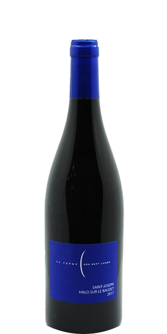

Gros canon avec de l’épices, des notes torréfiées et de sous-bois. Une belle minèralité légèrement mentholée qui affine sa structure
15 °C Saint-Joseph

Retour aux choix des vins
}

ferme des 7 lunes|2018
Cuvée Halo sur le Baudet
Naturel